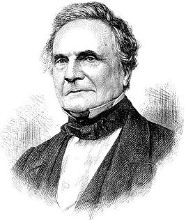
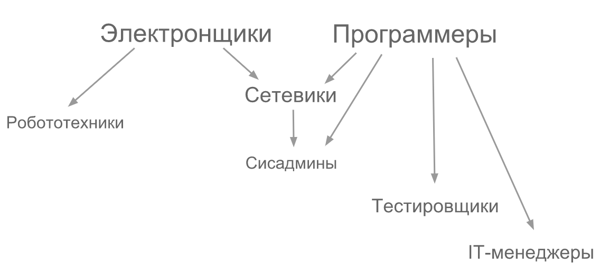

Профессии будут кардинально меняться или исчезать
каждые
10 ЛЕТ
Хайп быстрее света
Огонь — 590 тыс. лет
Электричество — 80 лет
Телевидение — 60 лет
Персональный компьютер — 20 лет
Сотовая связь — 18 лет
Интернет — 15 лет
Смартфоны — 7 лет
Технологии тоже смертны
Огонь — 100 лет
ДВС — 30 лет
Телевидение — 15 лет
Смартфоны — 8 лет
Персональный компьютер — 5 лет
По данным буйной фантазии докладчика
Профессии без будущего
Бухгалтер
Библиотекарь
Испытатель
Нотариус
Банкир-операционист
Экскурсовод
Журналист
Переводчик
Авиадиспетчер
Штурман
Корректор
Курьер
Риэлтор
Турагент
Инспектор ДПС
Оператор call-центра
Дальнобойщик
etc...
Многочисленные исследования и статьи: раз, два, три...
Какие профессии в зоне риска?
Простые алгоритмы действий
Много данных для анализа
Простое посредничество
Легко автоматизируются
Качества, которые останутся за человеком
Эмпатия
Любопытство
Творчество
Нестандартное мышление
Инфраструктура — наше всё
Электроэнергетика
Водоснабжение и водоотведение
Транспорт
Информационные технологии
... и другие, без которых всё рухнет
Как стать IT-специалистом?
Типичный IT-специалист
Немного скучной истории

Чарлз Бэ́ббидж
Ада Лавлейс
Эволюция IT-шников

Как стать IT-специалистом?
Хорошо учиться в школе
Знать математику на отлично
Закончить престижный (привет, МГТУ) ВУЗ по специальности
Как стать IT-специалистом?
Хорошо учиться в школе
Знать математику на отлично
Закончить престижный ВУЗ по специальности
Несколько простых шагов
Выбрать сферу деятельности
Определиться с языком программирования
Изучать программирование, разработку, совершенствовать свои навыки
?????
PROFIT!
Разработка IT-продукта
Рассмотрим какой-нибудь крупный IT-продукт, например, Почту@Mail.RU
Разработчики — отвечают за реализацию функционала
Тестировщики — гарантируют, что продукт соответствует требованиям качества
Продакт-менеджеры — определяют пути развития продукта
UI/UX проектировщики — делают продукт удобным для пользователей
Дизайнеры — создают внешний вид продукта
Сисадмины — поддерживают инфраструктуру
Data-scientist'ы — специалисты по анализу данных и машинному обучению
Специалисты по ИБ — гарантируют безопасность продукта
Кем стать?
Game-dev — разработка игр
Mobile — разработка мобильных приложений
System — системная разработка (OS, drivers)
Desktop — разработка приложений для настольных систем
WEB — разработка web-приложений и Интернет-сервисов
Выбор ЯП
си / С++ / Rust
.NET
Java / Kotlin
Objective C / Swift
python
golang
JavaScript
Что ещё нужно знать?
Алгоритмы — умение превращать описание задачи в последовательность шагов
Системы контроля версий — управление исходниками программ
Linux — администрирование linux, работа с командной строкой
Математика — системы счислений, логические функции
Английский язык — техническая литература, документация, IT-сообщество
Много чего ещё... — реляционная алгебра, теория массового обслуживания, нейронные сети, машинное обучение, распределённые системы, многопоточные системы, паттерны проектирования...